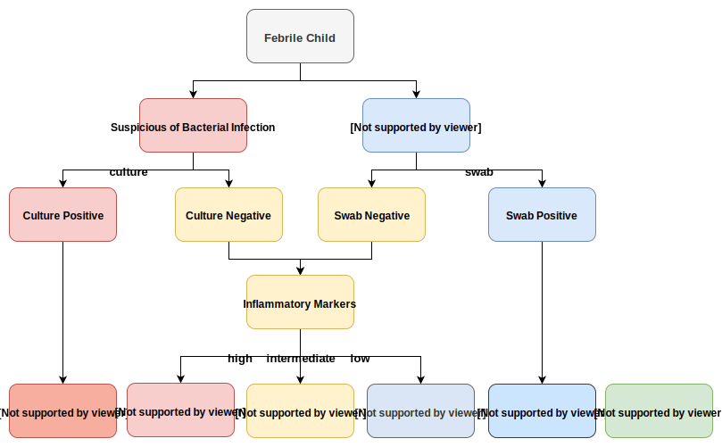

The Dataset
The dataset kindly provided by Dr Kaforou was composed of 302 children who had presented febrile (with a fever)to participating hospitals in the United Kingdom, Spain, the Netherlands, and the United States between 2009-2013. Clinical parameters were recorded for each of 23 variables which ranged from basic demographic data such as age and sex to results of blood tests. A subset of the clinical data for the recruited patients is shown in Table 1 below.
Table 1 - Summary of clinical data. Age details the patient age in months, Sex the patient gender, WBC the peak patietn white blood cell count, CRP the peak patient C reactive protein, Presentation the clinical description, diagnostic group the class to which the patient was assigned.
Patients were assigned to diagnostic groups following review of the clinical presentation and investigations by two clinicians who were independent of the patients initial management. Patients would be alocated to one of 5 groups on the basis of the flow chart seen in Figure 1 below.

Figure 1 - Classification of patients into diagnostic groups. Patients with a positive bacterial culture or positive viral swab in the context of a clinically consistent syndrome were assigned to definite bacterial or definite viral respectively. Intermediate cases were resolved using the inflamatory markers (CRP and neutrophil count). Patients with CRP > 60 were assigned to probable bacterial. Patients with CRP < 60 and neutrophil count < 12 were assigned probable viral. The remainder were allocated to the unknown group.